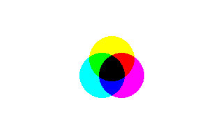

Help Center›FreeBASIC
And (Graphics Put)keyword
Parameter to the Put graphics statement which uses a bit-wise And as the blitting method
Syntax
Put [ target, ] [ STEP ] ( x,y ), source [ ,( x1,y1 )-( x2,y2 ) ], AndDescription
The
And method combines each source pixel with the corresponding destination pixel, using the bit-wise And function. The result of this is output as the destination pixel.This method works in all graphics modes. There is no mask color, although color values with all bits set (
255 for 8-bit palette modes, or RGBA(255, 255, 255, 255) in full-color modes) will have no effect, because of the behavior of And.In full-color modes, each component (red, green, blue and alpha) is kept in a discrete set of bits, so the operation can be made to only affect some of the channels, by making sure the all the values of the other channels are set to
255.Remarks
Differences from QB
- None
See also
Example
''open a graphics window
ScreenRes 320, 200, 16
Line (0, 0)-(319, 199), RGB(255, 255, 255), bf
''create 3 sprites containing cyan, magenta and yellow circles
Const As Integer r = 32
Dim As Any Ptr cc, cm, cy
cc = ImageCreate(r * 2 + 1, r * 2 + 1, RGBA(255, 255, 255, 255))
cm = ImageCreate(r * 2 + 1, r * 2 + 1, RGBA(255, 255, 255, 255))
cy = ImageCreate(r * 2 + 1, r * 2 + 1, RGBA(255, 255, 255, 255))
Circle cc, (r, r), r, RGB(0, 255, 255), , , 1, f
Circle cm, (r, r), r, RGB(255, 0, 255), , , 1, f
Circle cy, (r, r), r, RGB(255, 255, 0), , , 1, f
''put the three sprites, overlapping each other in the middle
Put (146 - r, 108 - r), cc, And
Put (174 - r, 108 - r), cm, And
Put (160 - r, 84 - r), cy, And
''free the memory used by the sprites
ImageDestroy cc
ImageDestroy cm
ImageDestroy cy
''pause the program before closing
Sleep

Reference
- Documented in KeyPgAndGfx.html